FICDE
Módulo: 2 REFLEXOLOGÍA MANUAL PROFESIONAL

Espacio de Repaso Interactivo
Donde el conocimiento se convierte en acción
Síntesis
Fundamentos de la reflexología manual, anatomía y mapas reflejos de la mano, beneficios, principales técnicas de presión y masaje, higiene y ergonomía profesional.
Análisis Crítico
Errores y riesgos en reflexología manual relacionados con evaluación y contraindicaciones, higiene y ergonomía, aplicación incorrecta de las técnicas, presencia de lesiones o procesos agudos y criterios de derivación profesional.
Escenarios
Abordaje práctico de diferentes situaciones en reflexología manual, adaptando la sesión a las características y necesidades del consultante e incorporando recomendaciones posteriores.
Práctica
Preparación e higiene para la sesión de reflexología manual, aplicación de maniobras de movilización, presión, masaje y técnicas específicas, integración de secuencias y cierre de la práctica.